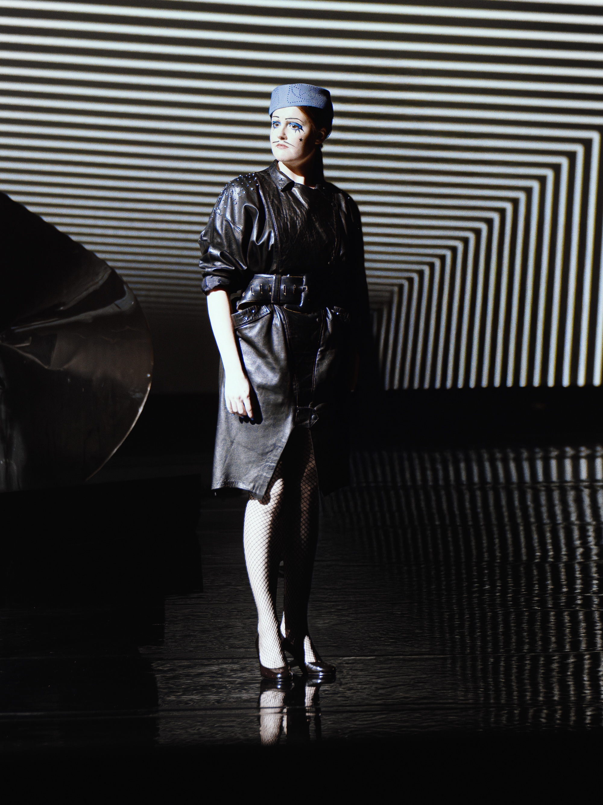
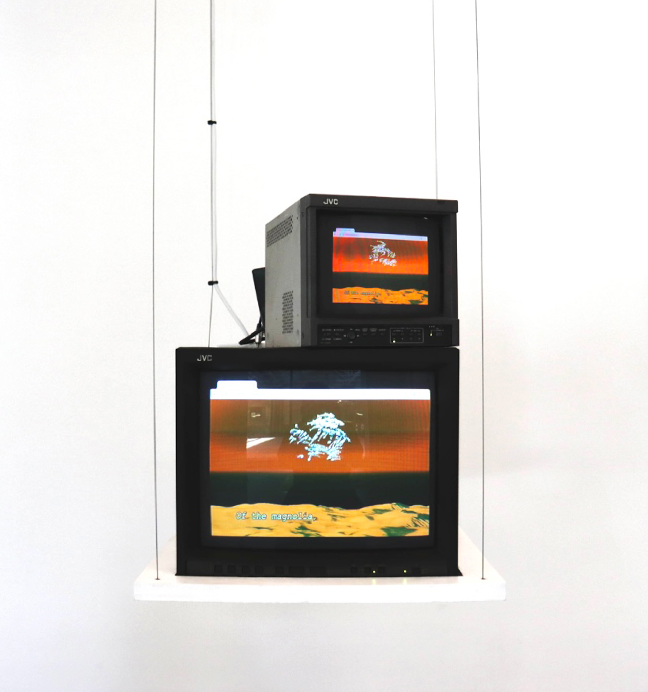
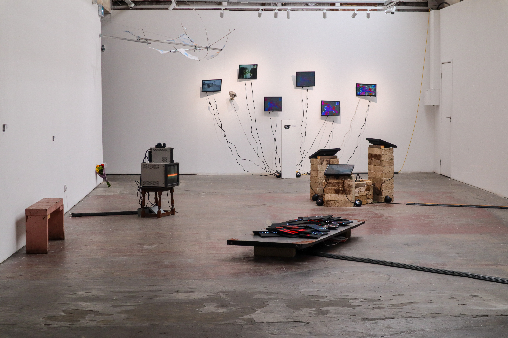
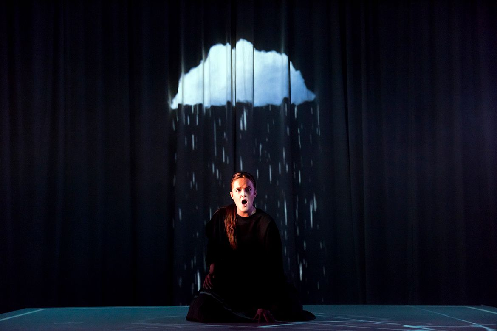
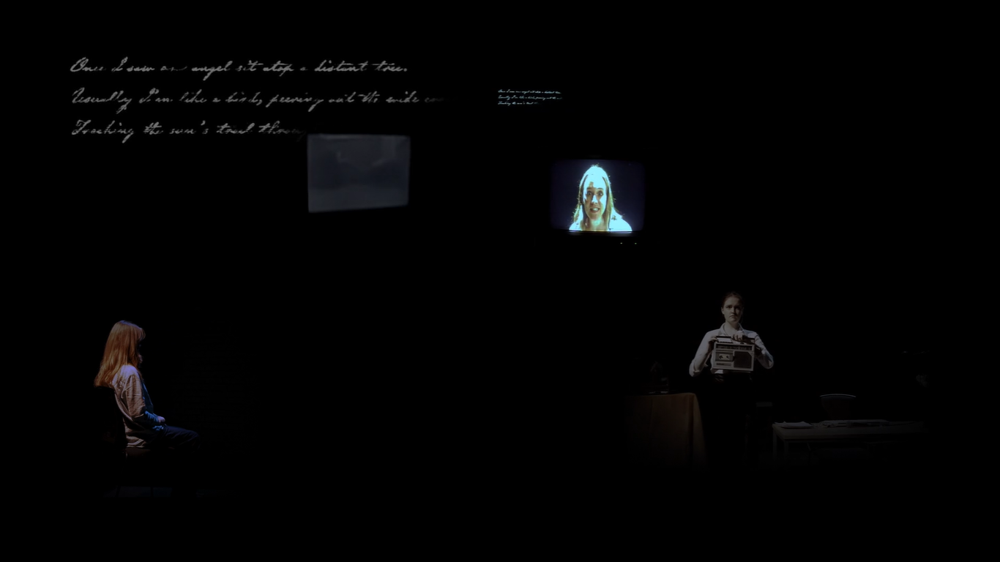

THE MAGIC FLUTE II: LE MALÉDICTION
An electro opera by Damon Albarn. Text by Jeremy Sams, after Goethe. Premiered at Théâtre du Lido, Paris.


ME, HER, AND THE COMPUTER I
Part of an ongoing collaboration with digital artist Charlotte Young. Exhibited at the Lethaby Gallery, Copeland Gallery and SET Woolwich, with development supported by Hawkwood College and the Francis W Reckitt Arts Trust.
GRANGE PARK OPERA (2025 SEASON)
Mazeppa: a new production by David Pountney. Simon Boccanegra (revival): originally directed by David Pountney and featuring original set design by Ralph Koltai.
‘Voi che sapete’ from Le Nozze di Figaro, Mozart
L’HEURE ESPAGNOLE
Concert edition with Ernest Reed Symphony Orchestra at St John’s Waterloo. Conducted by Christopher Stark.
‘Oh! La pitoyable aventure!’ from L’heure Espagnole, Ravel
RIP VAN WINKLE
Gothic Opera at Hoxton Hall.

AGRIPPINA
‘Con saggio tuo consiglio’ from Agrippina, Handel. Hampstead Garden Opera at Jacksons Lane Arts Centre.
FLIGHT
Royal College of Music. Directed by Jeremy Sams.

FIVESTONES
New work by Eldad Diamant fusing theatre, opera, improvisation, video, spoken-word and visual effects, inspired by the poetry of Judith Drigues. Premiered at the Royal Northern College of Music.